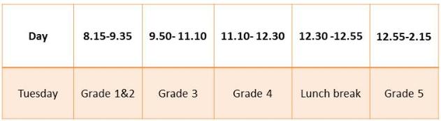
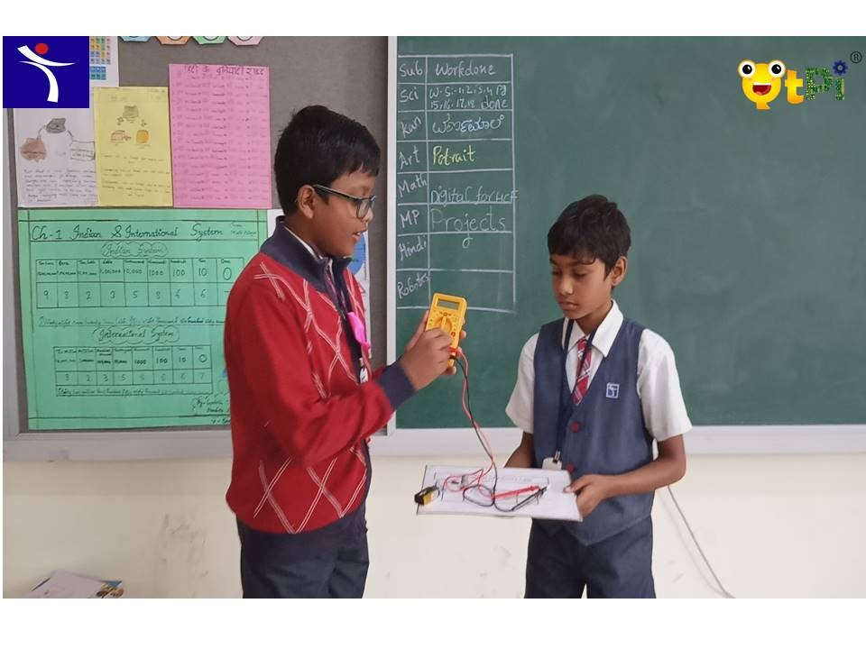
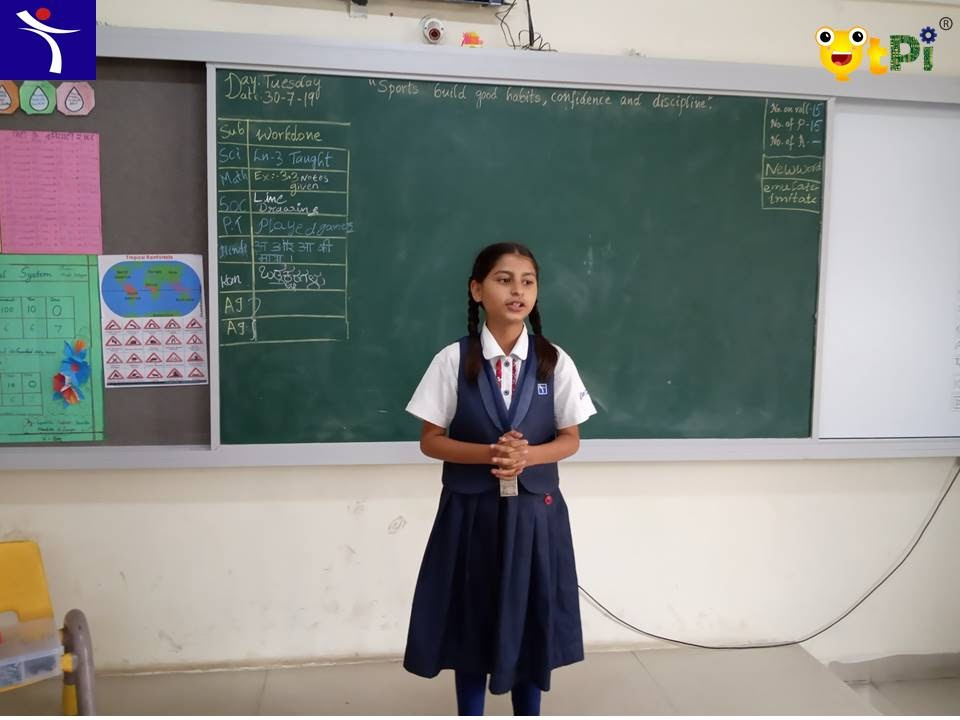
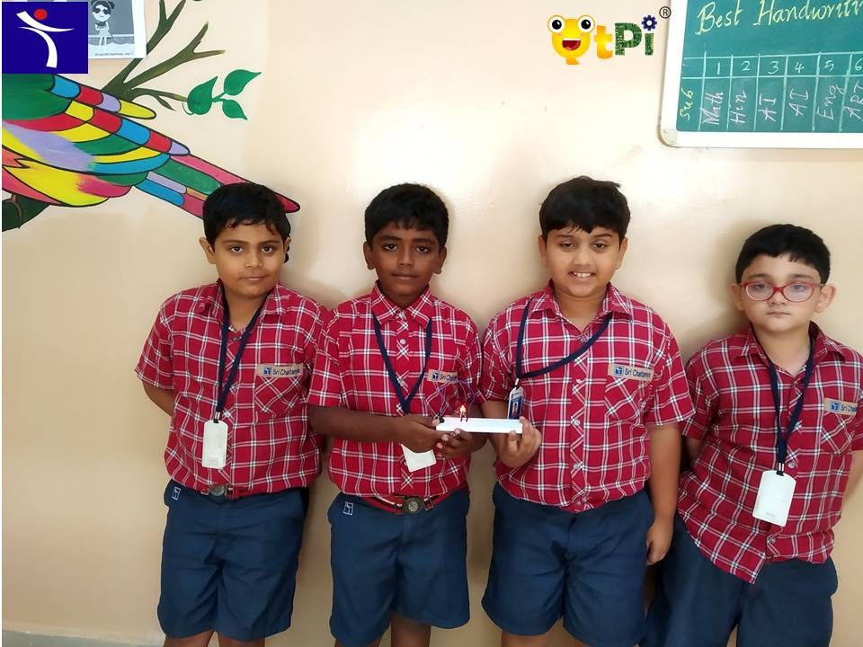
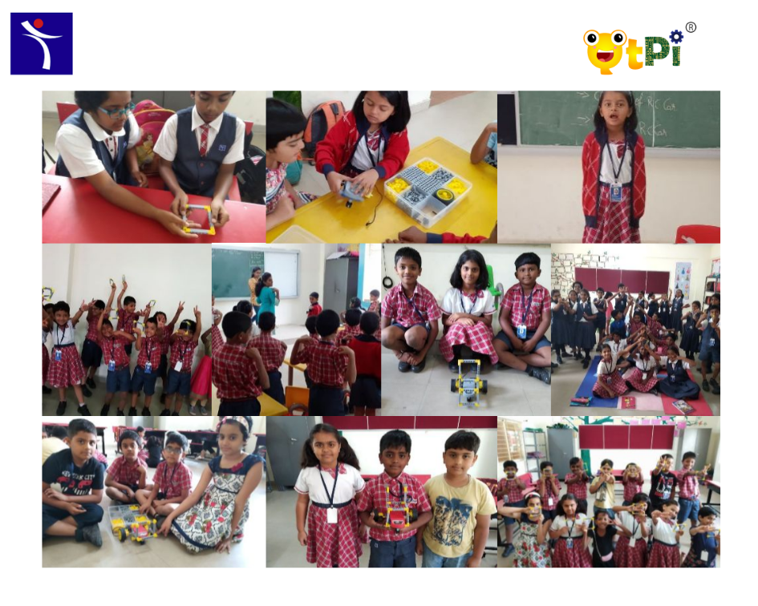
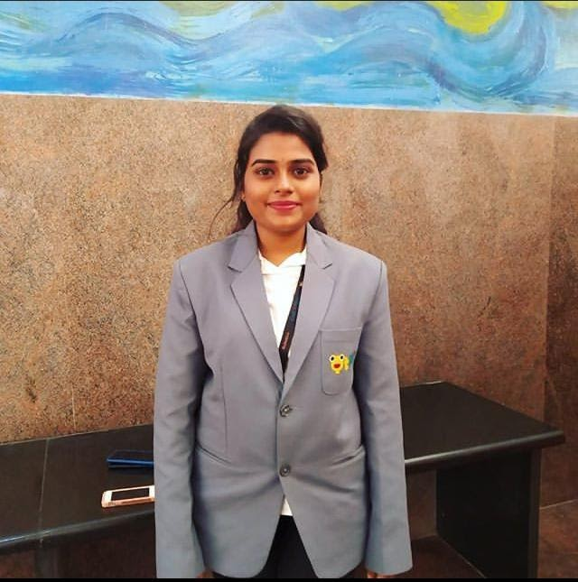

About Us:
Sri Chaitanya educational institutions are widely recognized for its progressive approach and commitment to excellence. The institution that started with career oriented integrated teaching at the Intermediate level grew in leaps and bounds with branches across the country.
Sri Chaitanya fuels the desire to inculcate a lifelong habit of learning in students, imperative for holistic development. To fuel the seed of learning, the school constantly motivates the students to believe in the motto "Learning the treasure within". Sri Chaitanya Techno Schools provides a system of education which promotes an all-round development of the students to mould them for the future, to face the challenges of academic, environmental and social fields.
Objective:
We endeavour to be the right mentor for IIT-JEE aspirants, while also helping them develop a global perspective, with a keen interest in community life. We prepare students for competitive exams by providing in-depth knowledge of various subjects at an intermediate level.
Mission:
Mission of Chaitanya educational institutions is to focus on the holistic development of each child, and to give them a competitive edge with the help of an extensive curriculum and dynamic teaching methodologies.
To Know about [QtPi Robotics] (https://www.qtpi.in/)

 |  |
Shrikar and Sharavan Brain Matrix Grade 5 | Pathan Eshal khan Brain Matrix Grade 5 |
 |
|
Divyanshu,Bhuvan, Azlaan, Arunopriya(from left) Brain Matrix Grade 3 | Charvi, karthik,Tanmay,Vagdeeshh, Hitachi(from left) Brain Matrix Grade 2 |


Name | Photo | Qualification |
Ayeesha Siddiqa | BCA | |
Soujanya G |  | B.Tech CSE |
SRI CHAITANYA TECHNO SCHOOL
Devasandra Main Road, Krishnarajapura,
Bangeluru - 560036
Contact: 9663833991, 9611235235
Website: https://srichaitanyaschool.net/
|
|